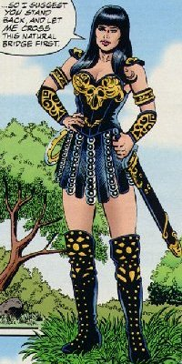
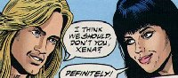
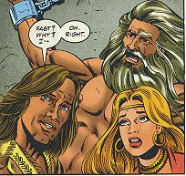
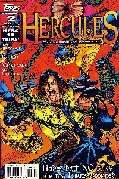
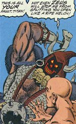

TV Guide June 15, 1996
Title: Hercules: the Legendary Journeys
Date: June 1996
Pages: 5
Cover Price: $1.19
Writer: Roy Thomas
Pencils: Jeff Butler
Inks: Steve Montano
Letters: Ken Lopez
Colors: Digital Chameleon
Editors: Renee Witterstaetter, Jim Salicrup, Charles S Novinskie
OVERVIEW:
Hercules and Xena meet by coincidence at a narrow bridge. Each demands that the other give way to allow crossing the bridge. As they wrestle, a troll, Anaxus, pops up from under the bridge and tells them that they must pay 20 dinars to cross the bridge. They punch his lights out, causing him to destroy the bridge. Despite his loss, Anaxus gloats that they won't reach their destinations now, only to learn that they had both come to defeat him. Anaxus threatens to rebuild the bridge, but Herc and Xena decide to build another bridge downstream and charge a lighter toll...
COMMENTS:
This is a fun little adventure without much to it. It was advertised as a preview to the new Hercules comic about to come out. The art is quite good, and the characterization of both Xena and Herc seems pretty good. A nice start to the comic franchise.

CONCLUSION:
Worth picking up, if you can find it. Reprinted in the Xena: 1st Appearances Collection.
Review Date: 3 Oct 1997 by Laura Gjovaag
Hercules: The Legendary Journeys #1
Title: The Trial of Hercules: Part 1
Date: June 1996
Actual Release: June 19, 1996
Pages: 32 (23 pgs of story)
Cover Price: $2.95
Writer: Roy Thomas
Pencils: Jeff Butler
Inks: Steve Montano
Letters: Ken Lopez
Colors: Digital Chameleon and Renee Witterstaetter
Editor: Renee Witterstaetter
Cover: Michael Golden
NOTE: Hercules: The Legendary Journeys is based on the TV Series created by Christian Williams and endorsed by gods and goddesses everywhere
OVERVIEW:
As Salmoneus is telling tales of Hercules' deeds for money, a woman approaches him and asks if he can lead her to Hercules. Her name is Pronoea, and she will pay well to find him. Salmoneus agrees, and they wander until Pronoea is about fed up. Unfortunately, they're in centaur country, and some centaurs have decided to rob and kill them. Fortunately, Hercules happened to be nearby to help them out.

After creaming the centaurs, Hercules agrees to help the woman, who tells him that her husband is being held captive and tortured in the Caucasian Mountains. Salmoneus bows out, and the two travel on together.
Just as Herc is getting suspicious since they've travelled to the middle of nowhere, they get to her husband, Prometheus. Pronoea explains that he was bound and shrunk by Zeus, who also muted him. After some thought, and a fight with a golden bird, Herc frees Prometheus who immediately tells them that Zeus did not mute him, it was another god who didn't want Zeus to know a secret.
Just then, Bia and Cratos arrive, servants of Zeus, and attack. Herc holds his own for a time, but they defeat him and retie Prometheus. They then take the bound Hercules off while Pronea wonders if they are all doomed.
COMMENTS:
The art is excellent, though I'm not very fond of the cover. The coloring is odd, and I can't help but think at first glance that the snake in his logo is actually a flower...
Salmoneus' tales include the origin of Hercules. Very useful for the first issue of a comic book. Salmoneus is also touting his "authorized biography" of Hercules, which includes the famous twelve labors. Herc questions him about it, but figures it won't matter much. It's only Salmoneus.
Pronoea needs to get some clothes on. Of course, so does Prometheus, but she's apparently wearing what she's wearing by choice.
There is a Q&A at the back with Jeff Butler, the artist. There is also a short biography of Roy Thomas.
CONCLUSION:
Not being a big fan of Hercules, I didn't really know what to make of this story. I like Salmoneus, but once he left I got bored with the story.
Review Date: 4 Oct 1997 by Laura Gjovaag

Hercules: The Legendary Journeys #2
Title: The Trial of Hercules: Part 2
Date: July 1996
Actual Release: July 31, 1996
Pages: 32 (22 pgs of story)
Cover Price: $2.95
Writer: Roy Thomas
Pencils: Jeff Butler
Inks: Steve Montano
Letters: Ken Lopez
Colors: Digital Chameleon
Editor: Renee Witterstaetter
Cover: Michael Golden
NOTE: Hercules: The Legendary Journeys is based on the TV Series created by Christian Williams and endorsed by gods and goddesses everywhere
OVERVIEW:
Bia and Cratos take Hercules to a desolate peak, where Hera waits. Herc notices that the set-up appears to be for some kind of show. He attacks the two servants, but is stopped from breaking his chains by his father, Zeus.

Zeus explains that Hercules is on trial for freeing Prometheus. The jury is The Furies, Maegara, Alecto, and Tisiphone, and the prosecution is Ares.
Meanwhile, in a small Greek village, Salmoneus is once again telling tales. He makes the mistake of showing his gold and is attacked upon leaving the bar by two satyrs. Lucky for him, Atalanta is around and saves him. When she hears that Herc wandered off with Pronoea, she insists on following, recognizing the name. Salmoneus agrees to go, and they rush off to help their friend.
Ares declares Herc guilty, and insists that the Furies rip him to shreds, but Herc asks to speak. As he tries to figure out what to say, Salmoneus arrives to speak for him. He delays the trial long enough for Prometheus to arrive, freed by Atalanta.
Prometheus explains that he was bound because he knew a secret that could destroy Zeus, about a decree by the fates that any child born to Thetis (who Zeus fancies) would eventually overthrow his father. Ares is accused of muting Prometheus, and responds by trying to kill him. Herc stops him, and the two battle until the Furies decide that Ares is guilty, not Herc, and they attack Ares.
The court leaves, and Prometheus and Pronoea are returned to Titan size and status. They decide to steer clear of Zeus for awhile and vanish. Herc, Atalanta and Salmoneus leave together...
COMMENTS:
The meanings of the Greek names for the various gods and demi-gods are often inserted neatly into the story.
Salmoneus is a lot braver than I usually give him credit for. He jumps right into the court, up against the Furies, Zeus, and Ares, without flinching... much.
This is not the same Ares I recognize from Xena's show. This Ares wears tons of armor and has an axe on one hand and a mace on the other. His face is little more than a glowing skull.
Includes an essay on Hercules in Hollywood written by Roy Thomas and Bill Warren.
CONCLUSION:
More women in almost nothing. I mean, Xena at least is covered up most of the time. I didn't really like this story, though I quite enjoyed the bits with Salmoneus.
Review Date: 4 Oct 1997 by Laura Gjovaag